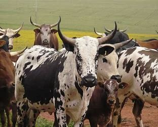

Livestock
 Sipho Mabaso
Sipho Mabaso
The Rise of Nguni Cattle Farming in South Africa
Indigenous Nguni cattle are gaining popularity among commercial farmers for their hardiness, disease resistance, and low maintenance requirements.
April 15, 2025